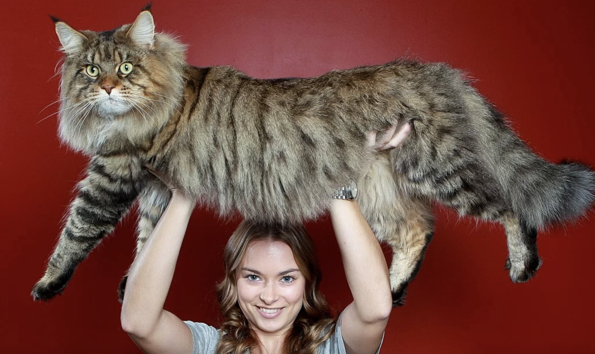

Многие утверждают, что первыми кошек приручили и одомашнили древние египтяне, однако общего мнения на этот счет нет. Считается, что история появления кошек рядом с человеком начинается примерно 10-12 тысяч лет назад и связана с тем, что эти животные сблизились с людьми именно с тех пор, когда последние начали вести оседлый образ жизни. Это, кстати, делает кошек просто уникальными среди всех зверей, многие из которых до сих пор стараются держаться от людей подальше. Много споров вызывает также история происхождения кошек, которая тоже весьма неоднозначна. Самое распространенное мнение, которое, кстати, особенно прижилось в России, заключается в том, что единым предком современных кошек является переднеазиатская североафриканская степная кошка, которая была одомашнена вовсе не в Египте, а в Нубии, и произошло это около 4 тысяч лет назад. Только после этого кошки попали в Египет, а затем появились и в Азии, где успешно скрестились с лесными бенгальскими видами. В Европе происхождение кошки тоже связано с многократным смешиванием видов и пород: домашние кошки, прибывшие из Нубии, активно скрещивались с дикими лесными европейскими кошками, что впоследствии и дало невероятное разнообразие пород и расцветок. Впрочем, согласно отдельной теории происхождения кошек, ни в одну из стран этих животных никто специально не завозил: просто кошки одновременно появились в разных местах планеты, в каждом из которых развивались по своим особым законам.
 Если история возникновения этих животных достаточно запутана, то история одомашнивания кошек еще таинственней. Вероятнее всего, первое приручение кошек состоялось на Среднем Востоке и было связано с появлением земледелия и необходимостью охранять урожай от грызунов. Однако ученые до сих пор спорят, кто же в самом деле кого приручил – человек кошку или кошка человека. Вполне возможно, что кошка «одомашнилась» сама, охотясь на грызунов и неотступно следуя за людьми, которые быстро приняли этих животных в свою жизнь. Как бы там ни было, история приручения кошек берет свое приблизительное начало за 2 тысячи лет до нашей эры. Основную заслугу в этом приписывают египтянам, которым одомашнить кошку помогла в том числе и религия. Однако самое активное одомашнивание началось все же позже и было связано с расцветом многих цивилизаций, который начался за 1000 лет до нашей эры. Именно тогда у кошек окончательно сформировались изменения в поведении, которые окончательно сделали их домашними животными, а окончательную точку в приручении поставила Европа. Италия, Швейцария, Германия и Британия последовательно принимали в своих границах домашних кошек, активно расселяя их в домах своих граждан и возлагая на них особые надежды в борьбе за урожай. Впрочем, невзирая на это, окончательная точка в одомашнивании кошек до сих пор не поставлена. Безусловно, это животное считается одним из наиболее близких человеку, однако его независимый характер доказывает, что даже за многие тысячелетия своего приручения кошки так и остались свободными и не покоренными, а их жизнь рядом с людьми можно по-прежнему считать огромным подарком для последних.
В России кошка прижилась в 11 веке, без нее не строили дом и не заходили в избу, кошка на Руси считалась благим животным, которая прогоняет нечисть вокруг. За все века существования кошки рядом с человеком происходило множество революций, связанных с ними, их то возносили на пьедестал почета и обожествляли, то беспощадно гнали или сжигали. На сегодняшний день кошки есть практически в каждом доме, а пород их создано превеликое множество. По всему миру насчитывается более 50 видов семейства кошачьих для одомашнивания, кроме того, благодаря скрещиванию различных пород подвидов, в два раза больше. Самыми распространенными породами кошек на сегодня принято считать русскую голубую, корниш-рекс, экзотическую, сиамскую, сфинкса, шотландскую вислоухую, мейн-кун, британскую, персидскую, Курильского бобтейла. Самыми редкими породами кошек являются Домашний сервал, Эльф, Серенгети, Мончикины, Тойгер.